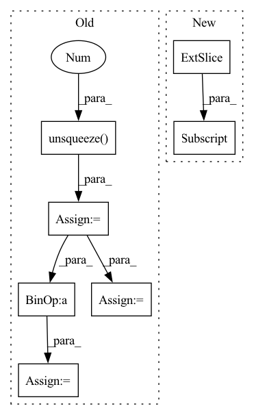

Pattern ID :11030
Before Change
X_ks = torch.zeros(len(L), spec_shape[1], spec_shape[2]).to(self.device)
sum_X_k = torch.zeros(spec_shape[1], spec_shape[2]).to(self.device)
for (i, k) in enumerate(L):
X_k = nmf_dictionary[:, k].unsqueeze(1) @ psi_out[k, :].unsqueeze(0 )
sum_X_k += X_k
X_ks[i] = X_k
// cem : for the denominator we need to sum over all K, not just the selected ones.
// need the eps for the denominator
eps = 1e-10
X_int = (X_ks / (sum_X_k.unsqueeze(0)+eps)).sum(0) * X_stft_power_log
// get back to the standard stft
X_int = torch.exp(X_int) - 1After Change
// sum_X_k += X_k
// X_ks[i] = X_k
// cem : for the denominator we need to sum over all K, not just the selected ones.
X_withselected = nmf_dictionary[:, L] @ psi_out[L, :]
Xhat = nmf_dictionary @ psi_out
// need the eps for the denominatorIn pattern: SUPERPATTERN
Frequency: 4
Non-data size: 7
Instances Fragment ID: 37961603
Project Name: speechbrain/speechbrain
Commit Name: 2efd11efe6d6a7c1741a0525e762ceac1837b706
Time: 2022-11-21
Author: csubakan@gmail.com
File Name: recipes/ESC50/classification/train_interpreter.py
M Class Name: InterpreterESC50Brain
N Class Name: InterpreterESC50Brain
M Method Name: interpret_batch(2)
N Method Name: interpret_batch(2)
M Parent Class: sb.core.Brain
N Parent Class: sb.core.Brain
M File Name: recipes/ESC50/classification/train_interpreter.py
N File Name: recipes/ESC50/classification/train_interpreter.py
M Start Line: 83
M End Line: 117
N Start Line: 84
N End Line: 120
Before Change
def forward(self, q, r):
x = q + self.num_q * r
Mvt = self.Mv.unsqueeze(0 )
p = []
Mv = []
for qt, xt in zip(q.permute(1, 0), x.permute(1, 0)):
kt = self.k_emb_layer(qt)
vt = self.v_emb_layer(xt)
wt = torch.softmax(torch.matmul(kt, self.Mk), dim=-1)
// Read Process
rt = (wt.unsqueeze(-1) * Mvt).sum(1)
ft = torch.tanh(self.f_layer(torch.cat([rt, kt], dim=-1)))
pt = torch.sigmoid(self.p_layer(ft)).squeeze()
// Write Process
et = torch.sigmoid(self.e_layer(vt))
Mvt = Mvt * (1 - (wt.unsqueeze(-1) * et.unsqueeze(1)))
at = torch.tanh(self.a_layer(vt))
Mvt = Mvt + (wt.unsqueeze(-1) * at.unsqueeze(1))
p.append(pt)
Mv.append(Mvt)After Change
self.f_layer(
torch.cat(
[
(w.unsqueeze(-1) * Mv[:, :-1] ).sum(-2),
k
],
dim=-1 Fragment ID: 37961858
Project Name: hcnoh/knowledge-tracing-collection-pytorch
Commit Name: c42b01b83dbe54e94f4294009fbfe8bd910e3638
Time: 2021-10-06
Author: rhc0624@gmail.com
File Name: models/dkvmn.py
M Class Name: DKVMN
N Class Name: DKVMN
M Method Name: forward(3)
N Method Name: forward(3)
M Parent Class: Module
N Parent Class: Module
M File Name: models/dkvmn.py
N File Name: models/dkvmn.py
M Start Line: 40
M End Line: 66
N Start Line: 50
N End Line: 87
Before Change
Returns:
torch.Tensor: torch.Tensor(N,4) as centerx centery width height
o_boxes = boxes.clone().unsqueeze(0 )
// x1,y1,x2,y2
w = o_boxes[:, :, 2] - o_boxes[:, :, 0]
h = o_boxes[:, :, 3] - o_boxes[:, :, 1]
o_boxes[:, :, :2] = (o_boxes[:, :, :2] + o_boxes[:, :, 2:]) / 2
o_boxes[:, :, 2] = w
o_boxes[:, :, 3] = h
return o_boxes.squeeze(0)
After Change
Returns:
torch.Tensor: torch.Tensor(N,4) as centerx centery width height
wh = boxes[:, 2:] - boxes[:, :2]
cxcy = (boxes[:, 2:] + boxes[:, :2]) / 2
return torch.cat([cxcy, wh], dim=1) Fragment ID: 37961940
Project Name: borhanmorphy/fastface
Commit Name: 6ee4e76aa1ee02b6cddc42fa8cc2d2a0f89970f8
Time: 2021-09-16
Author: borhano.f.42@gmail.com
File Name: fastface/utils/box.py
M Class Name: AnonimousClass
N Class Name: AnonimousClass
M Method Name: xyxy2cxcywh(1)
N Method Name: xyxy2cxcywh(1)
M Parent Class:
N Parent Class:
M File Name: fastface/utils/box.py
N File Name: fastface/utils/box.py
M Start Line: 93
M End Line: 103
N Start Line: 127
N End Line: 130